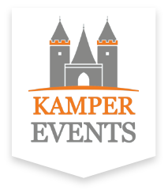
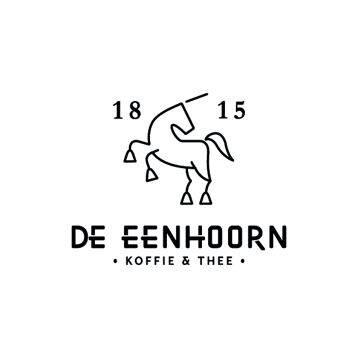
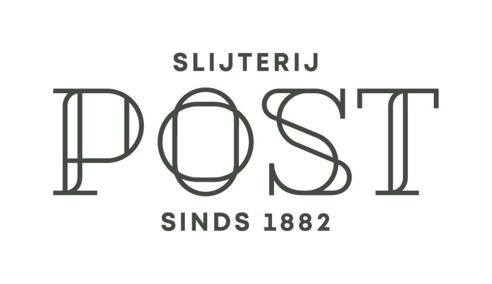

Om de Lustrum Dies D.V. 8 december te financieren zijn we ook afhankelijk van sponsoren. Om de kaartjes voor de dies niet al te duur te maken, hopen wij een ruime 3000 euro aan sponsoring te werven. Op deze pagina kunt u de voorgang van de sponsoring zien.
We zijn al een heel eind! Helpt u ons om tot bij de 100% te komen?
Wilt u ons sponsoren? Stuur ons dan een mailtje , of vul het contactformulier in. We gaan graag met u in gesprek.
Deze Lustrum Dies wordt mede mogelijk gemaakt door onder andere


